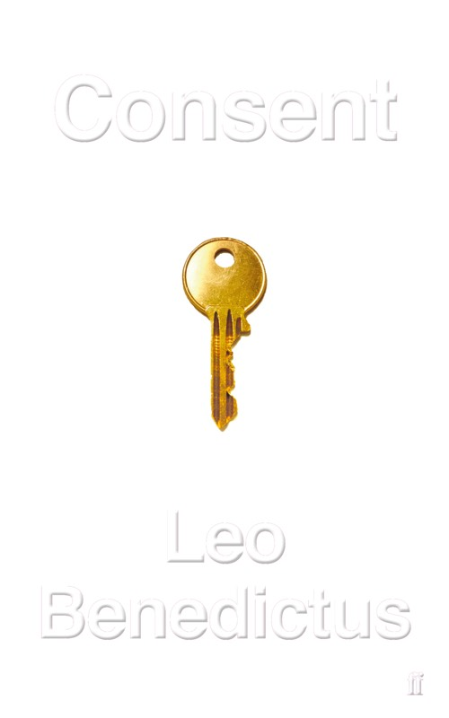
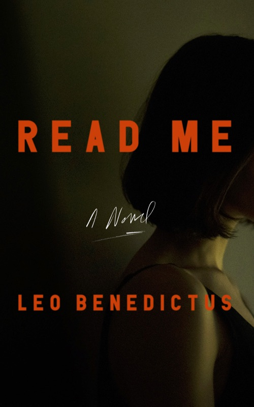
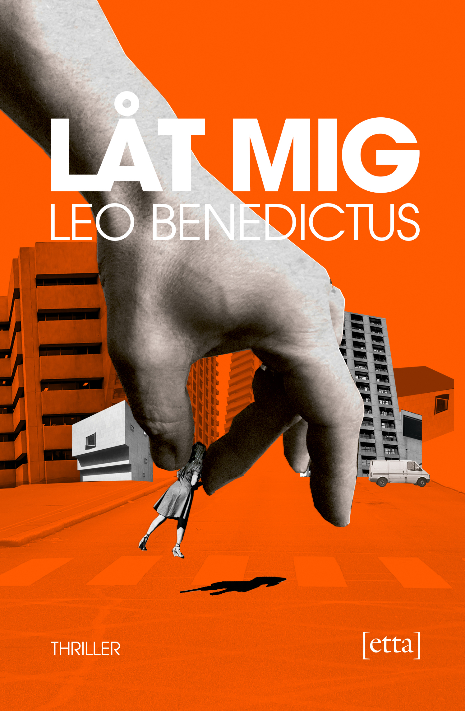
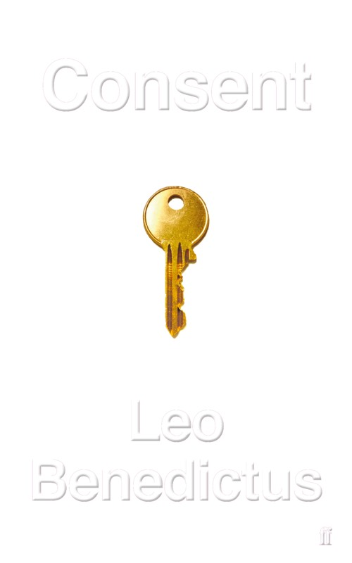
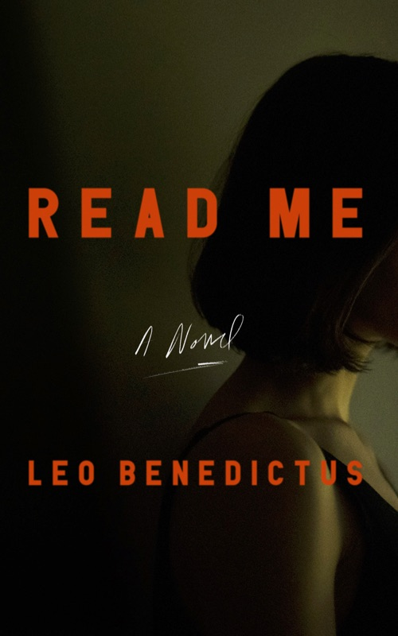
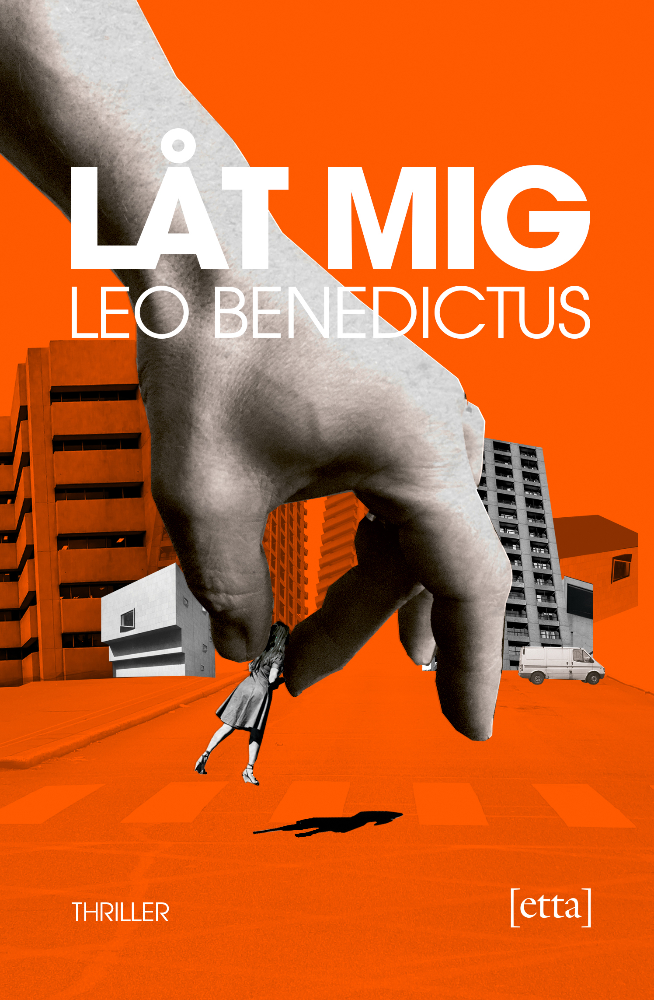

“Ingeniously nasty… reminiscent of Vladimir Nabokov and Patricia Highsmith… Expect to be provoked by a teasing metafictional game.”
John Dugdale, Sunday Times
“Creepily thought-provoking… [The narrator’s] manipulations are so cruel, his acts of violence so vile, that it feels profoundly disconcerting to have ever been seduced by him.”
Melissa Broder, The New York Times
“At times almost unreadably horrible… Consent is thought-provoking as well as shocking… A compulsive dark comedy that entertains and unnerves in equal measure.” ★★★★
Anthony Cummins, Metro
A word of warning: do not pick up this novella late at night. Not if you’d like to sleep any time soon… Darkly addictive.
Hephzibah Anderson, The Mail on Sunday
Queasily compelling… Perhaps most unsettling is the narrator’s voice… There is no denying the ingenuity with which Benedictus constructs his tale.
Barry Forshaw, The Financial Times
This is a novel that plays with the conventions of the form… great subtlety and wit… unusual and enormously compelling.
Alex Preston, The Observer
Another clever, cutting riff on the book-within-a book… this strangely congenial thriller-cum-treatise ends on a note of provocative ambiguity.
Catherine Taylor, The Guardian
A fiendishly clever book, though not for the soft-hearted… You’ll find yourself turning pages in the most disturbing kind of grip.
Cameron Woodhead, Sydney Morning Herald
By turns whimsical and bone-chillingly explicit, Consent is a gripping reimagining of one of the crime genre’s most tired tropes.
Declan Burke, The Irish Times
Not a particularly original contribution to an over-saturated genre
Alice Wadsworth, The Times Literary Supplement
Claustrophobic intensity… makes it a memorable and rewarding, if far from comfortable, experience.
Jake Kerridge, The Sunday Express
We’ll warn you now: Benedictus’s latest book - a psychopathic stalker’s journal - is pitch black. The stuff of nightmares.
Anon, Shortlist
Consent is a carefully crafted and completely chilling novel where all the possibilities are open – until they suddenly snap closed. Book of the Week
David Herkt, Stuff
Part-crime, part-thriller, part-horror novel from the much-praised author of The Afterparty… This is a disturbing book.
Sebastian Shakespeare, Tatler
If you want to be nearly scared to death, this is the book for you.
Anon, Whichbook.net
Consent is a pacy and chilling thriller about our voyeuristic obsession with other people.
Mark, The Word’s Shortlist